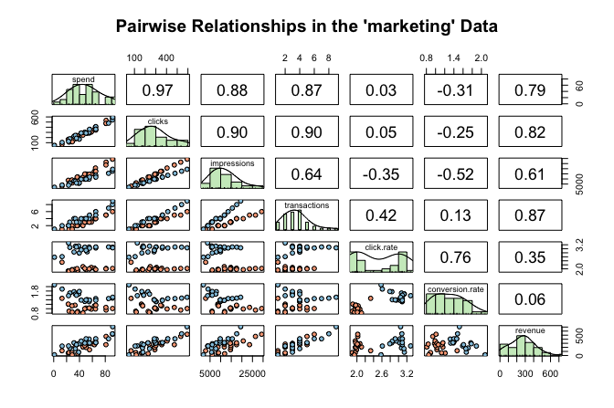
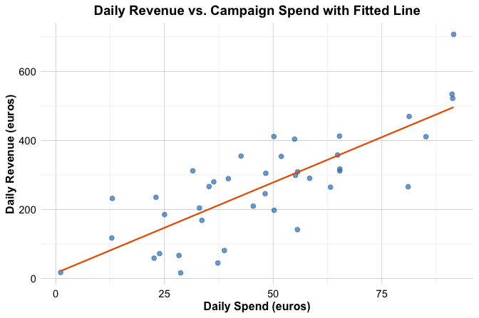
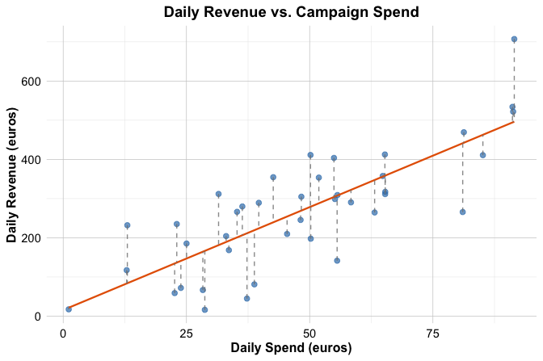
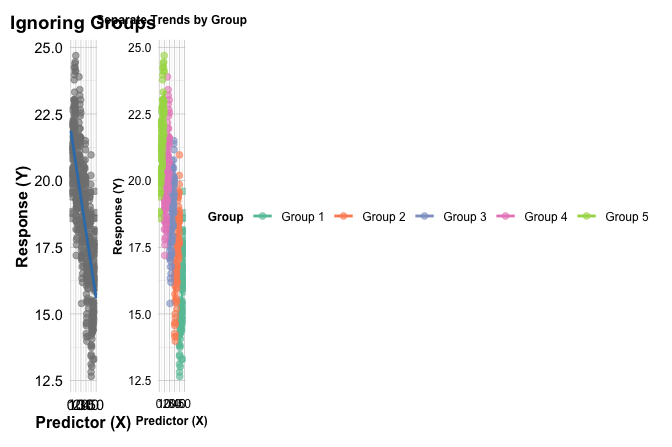
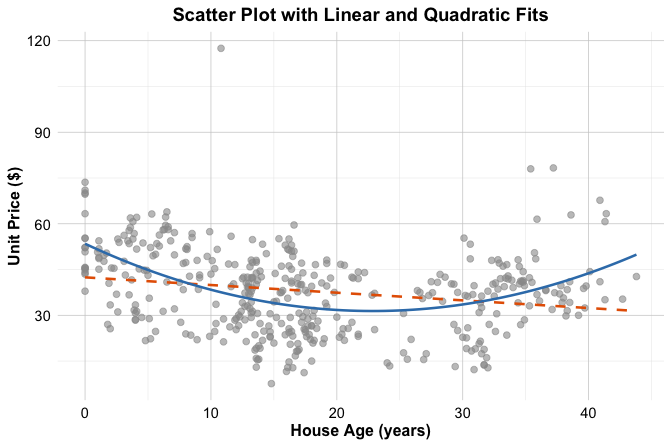
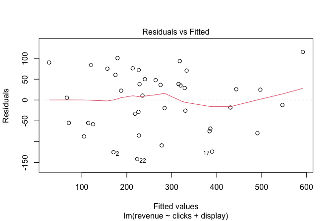
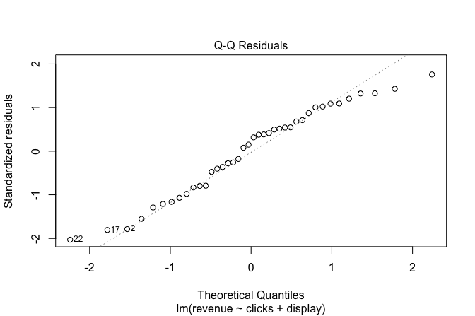
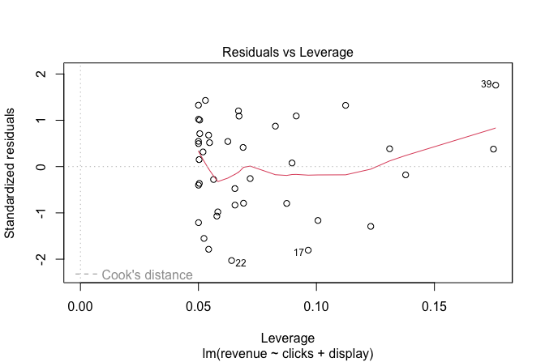
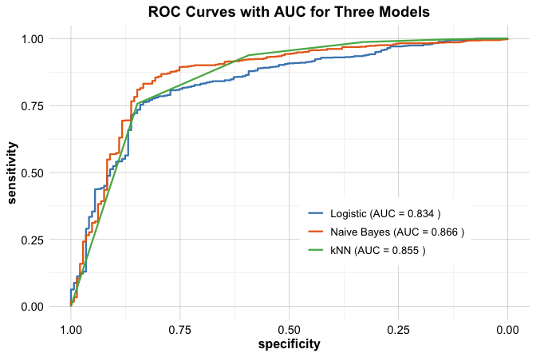

library(liver)
data(marketing, package = "liver")
str(marketing)
'data.frame': 40 obs. of 8 variables:
$ spend : num 22.6 37.3 55.6 45.4 50.2 ...
$ clicks : int 165 228 291 247 290 172 68 112 306 300 ...
$ impressions : int 8672 11875 14631 11709 14768 8698 2924 5919 14789 14818 ...
$ display : int 0 0 0 0 0 0 0 0 0 0 ...
$ transactions : int 2 2 3 2 3 2 1 1 3 3 ...
$ click.rate : num 1.9 1.92 1.99 2.11 1.96 1.98 2.33 1.89 2.07 2.02 ...
$ conversion.rate: num 1.21 0.88 1.03 0.81 1.03 1.16 1.47 0.89 0.98 1 ...
$ revenue : num 58.9 44.9 141.6 209.8 197.7 ...10 Regression Analysis: Foundations and Applications
How can a company estimate the impact of digital ad spending on daily sales? How do age, income, and smoking habits relate to healthcare costs? Can we predict housing prices from a home’s age, size, and location? These questions are central to regression analysis—one of the most powerful and widely used tools in data science. Regression models help us understand relationships between variables, uncover patterns, and make predictions grounded in evidence.
The roots of regression analysis can be traced back to the early 1700s, when Isaac Newton’s method of fluxions laid the mathematical groundwork for continuous change—concepts that underpin modern optimization and calculus. The term regression was introduced by Sir Francis Galton in 1886 to describe how the heights of offspring tend to regress toward the mean height of their parents. Its mathematical foundations were later formalized by Legendre and Gauss through the method of least squares. What began as an observation in heredity has since evolved into a powerful tool for modeling relationships and making predictions from data. Thanks to advances in computing and tools like R, regression techniques are now scalable and accessible for solving complex, real-world problems.
Across domains such as economics, medicine, and engineering, regression models support data-driven decisions—whether estimating the impact of advertising on sales, predicting housing prices, or identifying risk factors for disease. As Charles Wheelan writes in Naked Statistics(Wheelan 2013), “Regression modeling is the hydrogen bomb of the statistics arsenal.” Used wisely, it can guide powerful decisions; misapplied, it can produce misleading conclusions. A thoughtful approach is essential to ensure that findings are valid, actionable, and aligned with the goals of a data science project.
In this chapter, we continue building upon the Data Science Workflow introduced in Chapter 2 and illustrated in Figure 2.3. So far, our journey has included data preparation, exploratory analysis, and the application of two classification algorithms—k-Nearest Neighbors (Chapter 7) and Naive Bayes (Chapter 9)—followed by tools for evaluating predictive performance (Chapter 8). As introduced in Section 2.11, supervised learning includes both classification and regression tasks. Regression models expand our ability to predict numeric outcomes and understand relationships among variables.
This chapter also connects to the statistical foundation developed in Chapter 5, especially Section 5.11, which introduced correlation analysis and inference. Regression extends those ideas by quantifying relationships while accounting for multiple variables and allowing for formal hypothesis testing about the effects of specific predictors.
What This Chapter Covers
This chapter builds on your knowledge of the data science workflow and previous chapters on classification, model evaluation, and statistical inference. While earlier chapters focused on classification tasks—such as predicting churn or spam—regression models help us answer questions where the outcome is numeric and continuous.
You will begin by learning the fundamentals of simple linear regression, then extend to multiple regression and generalized linear models (GLMs), which include logistic and Poisson regression. You will also explore polynomial regression as a bridge to non-linear modeling. Along the way, we will use real-world datasets, including marketing, house, and insurance, to ground the techniques in practical applications.
You will also learn how to check model assumptions, evaluate regression performance, and select the most appropriate predictors using tools such as residual analysis and stepwise selection. These methods are introduced not just as statistical techniques, but as essential components of sound data-driven decision-making.
By the end of this chapter, you will be equipped to build, interpret, and evaluate regression models in R, and to understand when to use linear, generalized, or non-linear approaches depending on the nature of the data and modeling goals. We begin with the most fundamental regression technique: simple linear regression, which lays the groundwork for more advanced models introduced later in the chapter. These models will deepen your understanding of both prediction and explanation in data science.
10.1 Simple Linear Regression
Simple linear regression is the most fundamental form of regression modeling. It allows us to quantify the relationship between a single predictor and a response variable. By focusing on one predictor at a time, we develop an intuitive understanding of how regression models operate—how they estimate effects, assess fit, and make predictions—before progressing to more complex models with multiple predictors.
To illustrate simple linear regression in practice, we use the marketing dataset from the liver package. This dataset contains daily digital marketing metrics and their associated revenue outcomes, making it a realistic and relevant example. The data include key performance indicators (KPIs) such as advertising expenditure, user engagement, and transactional outcomes.
The dataset consists of 40 observations and 8 variables:
-
revenue: Total daily revenue (response variable). -
spend: Daily expenditure on pay-per-click (PPC) advertising. -
clicks: Number of clicks on advertisements. -
impressions: Number of times ads were displayed to users. -
transactions: Number of completed transactions per day. -
click.rate: Click-through rate (CTR), calculated as the proportion of impressions resulting in clicks. -
conversion.rate: Conversion rate, representing the proportion of clicks leading to transactions. -
display: Whether a display campaign was active (yesorno).
We begin by loading the dataset and examining its structure:
The dataset contains 8 variables and 40 observations. The response variable, revenue, is continuous, while the remaining 7 variables serve as potential predictors.
In the following section, we explore the relationship between advertising spend and revenue to determine whether a linear model is appropriate.
Exploring Relationships in the Data
Before constructing a regression model, we first explore the relationships between variables to ensure that our assumptions hold and to identify strong predictors. This step also helps assess whether the relationship between variables appears linear—a key assumption in simple linear regression.
A useful tool for this is the pairs.panels() function from the psych package, which provides a comprehensive overview of pairwise relationships:
library(psych)
pairs.panels(marketing)
This visualization includes:
Scatter plots (lower triangle), showing how each predictor relates to the response variable.
Histograms (diagonal), illustrating the distribution of each variable.
Correlation coefficients (upper triangle), quantifying the strength and direction of linear associations.
From the correlation matrix, we observe that spend and revenue exhibit a strong positive correlation of 0.79. This indicates that higher advertising expenditure is generally associated with higher revenue, suggesting that spend is a promising predictor for modeling revenue. This correlation reflects the type of relationship we studied in Section 5.11, where we examined how to quantify and test linear associations between numeric variables.
In the next section, we formalize this relationship using a simple linear regression model.
Fitting a Simple Linear Regression Model
A logical starting point in regression analysis is to examine the relationship between a single predictor and the response variable. This helps build an intuitive understanding of how one variable influences another before moving on to more complex models. In this case, we explore how advertising expenditure (spend) affects daily revenue (revenue) using a simple linear regression model.
Before fitting the model, it is helpful to visualize the relationship between the two variables to assess whether a linear assumption is appropriate. A scatter plot with a fitted least-squares regression line provides insight into the strength and direction of the association:

Figure 10.1 shows the empirical relationship between spend and revenue in the marketing dataset. The scatter plot suggests a positive association, indicating that increased advertising expenditure is generally linked to higher revenue—a pattern consistent with a linear relationship.
We model this association mathematically using a simple linear regression model, defined as:
\[ \hat{y} = b_0 + b_1 x \]
where:
\(\hat{y}\) is the predicted value of the response variable (
revenue),\(x\) is the predictor variable (
spend),\(b_0\) is the intercept, representing the estimated revenue when no money is spent, and
\(b_1\) is the slope, indicating the expected change in revenue for a one-unit increase in
spend.
To deepen your intuition, Figure 10.2 provides a conceptual visualization of this model. The red line shows the fitted regression line, the blue points represent observed data, and the vertical line illustrates a residual (error), calculated as the difference between the observed value \(y_i\) and its predicted value \(\hat{y}_i = b_0 + b_1 \times x_i\). Residuals quantify how much the model’s predictions deviate from actual outcomes.

In the next subsection, we estimate the regression coefficients in R and interpret their meaning in the context of digital advertising and revenue.
Fitting the Simple Regression Model in R
Now that we understand the logic behind simple linear regression, let us put theory into practice. To estimate the regression coefficients, we use the lm() function in R, which fits a linear model using the least squares method. This function is part of base R, so there is no need to install any additional packages. Importantly, lm() works for both simple and multiple regression models, making it a flexible tool we will continue using in the upcoming sections.
The general syntax for fitting a regression model is:
lm(response_variable ~ predictor_variable, data = dataset)In our case, we model revenue as a function of spend:
simple_reg = lm(revenue ~ spend, data = marketing)Once the model is fitted, we can summarize the results using the summary() function:
summary(simple_reg)
Call:
lm(formula = revenue ~ spend, data = marketing)
Residuals:
Min 1Q Median 3Q Max
-175.640 -56.226 1.448 65.235 210.987
Coefficients:
Estimate Std. Error t value Pr(>|t|)
(Intercept) 15.7058 35.1727 0.447 0.658
spend 5.2517 0.6624 7.928 1.42e-09 ***
---
Signif. codes: 0 '***' 0.001 '**' 0.01 '*' 0.05 '.' 0.1 ' ' 1
Residual standard error: 93.82 on 38 degrees of freedom
Multiple R-squared: 0.6232, Adjusted R-squared: 0.6133
F-statistic: 62.86 on 1 and 38 DF, p-value: 1.415e-09This output provides rich information about the model. At its core is the regression equation:
\[ \widehat{\text{revenue}} = 15.71 + 5.25 \times \text{spend} \]
where:
The intercept (\(b_0\)) is 15.71, representing the estimated revenue when no money is spent on advertising.
The slope (\(b_1\)) is 5.25, indicating that for each additional €1 spent, revenue is expected to increase by about €5.25.
But there is more to unpack. The summary() output also reports several diagnostics that help us assess the model’s reliability:
Estimate: These are the regression coefficients—how much the response changes with a unit change in the predictor.
Standard error: Reflects the precision of the coefficient estimates. Smaller values indicate more certainty.
t-value and p-value: Help assess whether the coefficients are statistically different from zero. A small p-value (typically < 0.05) implies a meaningful relationship.
Multiple R-squared (\(R^2\)): Indicates how well the model explains the variation in
revenue. In our case, \(R^2 =\) 0.623, meaning that 62.3% of the variance in revenue is explained by advertising spend.Residual standard error (RSE): Measures the average deviation of predictions from actual values. Here, \(RSE =\) 93.82, which provides a sense of the model’s typical prediction error.
These results suggest a statistically significant and practically useful relationship between advertising expenditure and revenue. However, model fitting is only the first step. In the following sections, we explore how to apply this model for prediction, interpret residuals, and check whether key assumptions are met—an essential step for building trustworthy regression models.
Making Predictions with the Regression Line
One of the key advantages of a fitted regression model is its ability to generate predictions for new data. The regression line provides a mathematical approximation of the relationship between advertising spend and revenue, enabling us to estimate revenue based on different levels of expenditure.
Suppose a company wants to estimate the expected daily revenue when €25 is spent on pay-per-click (PPC) advertising. Using the fitted regression equation:
\[\begin{equation} \begin{split} \widehat{\text{revenue}} & = b_0 + b_1 \times 25 \\ & = 15.71 + 5.25 \times 25 \\ & = 147 \end{split} \end{equation}\]Thus, if the company spends €25 on advertising, the model estimates a daily revenue of approximately €147.
This kind of predictive insight is particularly useful for marketing teams seeking to plan and evaluate advertising budgets. For example, if the objective is to maximize returns while staying within a cost constraint, the regression model offers a data-driven estimate of how revenue is likely to respond to changes in spending.
Note: Predictions from a regression model are most reliable when the input values are within the range of the observed data and when key model assumptions (e.g., linearity, homoscedasticity) hold.
As a short practice, try predicting the daily revenue if the company increases its advertising spend to €40 and €100. Use the regression equation with the estimated coefficients, and interpret your result. How does this compare to the €25 case? Hint: Keep in mind that linear models assume the relationship holds across the observed range—avoid extrapolating too far beyond the original data.
In practice, rather than manually plugging numbers into the regression formula, we can use the predict() function in R to estimate revenue more efficiently. You may recall using this same function in Chapter 9 to generate class predictions from a Naive Bayes model. The underlying idea is the same: once a model is fitted, predict() provides a simple interface to generate predictions for new data.
For example, to predict revenue for a day with €25 in advertising spend:
predict(simple_reg, newdata = data.frame(spend = 25))To make predictions for multiple values (e.g., €25, €40, €100), supply a data frame with those values:
predict(simple_reg, newdata = data.frame(spend = c(25, 40, 100)))This approach is especially helpful when working with larger datasets or integrating regression predictions into automated workflows.
Residuals and Model Fit
Residuals measure the difference between observed and predicted values, providing insight into how well the regression model fits the data. For a given observation \(i\), the residual is calculated as:
\[ e_i = y_i - \hat{y}_i \]
where \(y_i\) is the actual observed value and \(\hat{y}_i\) is the predicted value from the regression model. Figure 10.3 visually depicts these residuals as dashed lines connecting observed outcomes to the fitted regression line.

For example, suppose the 21st day in the dataset has a marketing spend of €25 and an actual revenue of 185.36. The residual for this observation is:
\[\begin{equation} \begin{split} \text{Residual} & = y - \hat{y} \\ & = 185.36 - 147 \\ & = 38.36 \end{split} \end{equation}\]Residuals play a crucial role in assessing model adequacy. Ideally, they should be randomly distributed around zero, suggesting that the model appropriately captures the relationship between variables. However, if residuals show systematic patterns—such as curves, clusters, or increasing spread—this may indicate the need to include additional predictors, transform variables, or use a non-linear model.
The regression line is estimated using the least squares method, which finds the line that minimizes the sum of squared residuals, also known as the sum of squared errors (SSE):
\[ \text{SSE} = \sum_{i=1}^{n} (y_i - \hat{y}_i)^2 \tag{10.1}\]
where \(n\) is the number of observations. This quantity corresponds to the total squared length of the orange dashed lines in Figure 10.3. Minimizing SSE ensures that the estimated regression line best fits the observed data.
In summary, residuals provide critical feedback on model performance. By analyzing the marketing dataset, we have demonstrated how to calculate and interpret residuals and how they guide model refinement. This foundational understanding of simple linear regression prepares us to evaluate model quality and to extend the framework to models with multiple predictors in the following sections.
Now that we have fitted and interpreted a simple linear model, let us ask whether the observed relationships are statistically reliable.
10.2 Hypothesis Testing in Simple Linear Regression
Once we estimate a regression model, the next question is: Is the relationship we found real, or could it have occurred by chance? This is where hypothesis testing comes in—a core concept introduced in Chapter 5 and applied here to assess the statistical significance of regression coefficients.
In regression analysis, we are particularly interested in whether a predictor variable has a statistically significant relationship with the response variable. In simple linear regression, this involves testing whether the estimated slope \(b_1\) from the sample provides evidence of a real linear association in the population, where the unknown population slope is denoted by \(\beta_1\).
The population regression model is
\[ y = \beta_0 + \beta_1x + \epsilon \]
where:
\(\beta_0\) is the population intercept: the expected value of \(y\) when \(x = 0\),
\(\beta_1\) is the population slope: the expected change in \(y\) for a one-unit increase in \(x\), and
\(\epsilon\) is the error term, accounting for variability not captured by the linear model.
The key question is: Is \(\beta_1\) significantly different from zero? If \(\beta_1 = 0\), then \(x\) has no linear effect on \(y\), and the model reduces to:
\[ y = \beta_0 + \epsilon. \]
We formalize this question using the following hypotheses:
\[ \begin{cases} H_0: \beta_1 = 0 \quad \text{(no linear relationship between $x$ and $y$)} \\ H_a: \beta_1 \neq 0 \quad \text{(a linear relationship exists between $x$ and $y$)} \end{cases} \]
To test these hypotheses, we compute the t-statistic for the slope:
\[ t = \frac{b_1}{SE(b_1)}, \]
\(SE(b_1)\) is the standard error of the slope estimate (\(b_1\)). This statistic follows a t-distribution with \(n - 2\) degrees of freedom (in simple regression, 2 parameters are estimated), where \(n\) is the number of observations. We then examine the p-value, which tells us how likely it would be to observe such a slope (or more extreme) if \(H_0\) were true. A small p-value—typically below 0.05—leads us to reject the null hypothesis.
Let us return to our regression model predicting revenue from spend in the marketing dataset:
summary(simple_reg)
Call:
lm(formula = revenue ~ spend, data = marketing)
Residuals:
Min 1Q Median 3Q Max
-175.640 -56.226 1.448 65.235 210.987
Coefficients:
Estimate Std. Error t value Pr(>|t|)
(Intercept) 15.7058 35.1727 0.447 0.658
spend 5.2517 0.6624 7.928 1.42e-09 ***
---
Signif. codes: 0 '***' 0.001 '**' 0.01 '*' 0.05 '.' 0.1 ' ' 1
Residual standard error: 93.82 on 38 degrees of freedom
Multiple R-squared: 0.6232, Adjusted R-squared: 0.6133
F-statistic: 62.86 on 1 and 38 DF, p-value: 1.415e-09From the output:
The estimated slope \(b_1 =\) 5.25€.
The t-statistic is 7.93.
The p-value is 0 (rounded to three digits), which is lower than 0.05.
Since the p-value is well below our significance level (\(\alpha = 0.05\)), we reject the null hypothesis \(H_0\). This provides strong evidence of a statistically significant association between advertising spend and revenue. In practical terms:
For each additional €1 spent on advertising, the model predicts an average increase in daily revenue of approximately €5.25.
This confirms that spend is a meaningful predictor in our regression model.
Caution: Statistical significance does not imply causation. The observed relationship may be influenced by other factors not included in the model. Interpreting regression results responsibly requires considering possible confounders, omitted variables, and whether assumptions hold.
Statistical significance tells us the relationship is unlikely due to chance—but how well does the model actually perform? That is the focus of the next section. In the next sections, we explore how to diagnose model quality using residuals and evaluate assumptions that ensure the validity of regression results. We will then build on this foundation by introducing multiple regression, where more than one predictor is used to explain variation in the response variable.
10.3 Measuring the Quality of a Regression Model
Suppose your regression model shows that advertising spend has a statistically significant effect on daily revenue. That is useful—but is it enough? Can the model make accurate predictions, or is it just detecting a weak trend in noisy data?
Hypothesis tests tell us if a variable is related to the outcome, but they do not tell us how well the model performs as a whole. To evaluate a model’s practical usefulness—whether for forecasting, decision-making, or understanding patterns—we need additional tools.
This section introduces two key metrics: the Residual Standard Error (RSE), which measures average prediction error, and the \(R^2\) (R-squared) statistic, which quantifies how much of the variation in the response variable is explained by the model. Together, they offer a more complete picture of model performance beyond statistical significance.
Residual Standard Error (RSE)
How far off are our predictions—on average—from the actual values? That is what the Residual Standard Error (RSE) tells us. It measures the typical size of the residuals: the differences between observed and predicted values; as presented in Figure 10.3 (orange dashed lines). In other words, RSE estimates the average prediction error of the regression model.
The formula for RSE is:
\[ RSE = \sqrt{\frac{SSE}{n-m-1}}, \]
where \(SSE\) is defined in Equation 10.1, \(n\) is the number of observations, and \(m\) is the number of predictors. The denominator (\(n-m-1\)) accounts for the degrees of freedom in the model, adjusting for the number of predictors being estimated.
A smaller RSE indicates more accurate predictions. For our simple linear regression model using the marketing dataset, the RSE is:
rse_value = sqrt(sum(simple_reg$residuals^2) / summary(simple_reg)$df[2])
round(rse_value, 2)
[1] 93.82This value tells us the typical size of prediction errors, in euros. While lower values are preferred, RSE should always be interpreted in the context of the response variable’s scale. For example, an RSE of 20 may be small or large depending on whether daily revenues typically range in the hundreds or thousands of euros.
R-squared (\(R^2\))
If you could explain all the variation in revenue using just one line, how good would that line be? That is the idea behind R-squared (\(R^2\))—a statistic that measures the proportion of variability in the response variable explained by the model.
The formula is:
\[ R^2 = 1 - \frac{SSE}{SST}, \]
where \(SSE\) is the sum of squared residuals (Equation 10.1) and \(SST\) is the total sum of squares, representing the total variation in the response. \(R^2\) ranges from 0 to 1. A value of 1 means the model perfectly explains the variation in the outcome; a value of 0 means it explains none of it.
You can visualize this concept in Figure 10.1, where the red regression line summarizes how revenue changes with spend. The \(R^2\) value quantifies how well this line captures the overall pattern in the marketing data:
round(summary(simple_reg)$r.squared, 3)
[1] 0.623This means that approximately 62.3% of the variation in daily revenue is explained by advertising spend.
In simple linear regression, there is a direct connection between \(R^2\) and the correlation coefficient introduced in Section 5.11 of Chapter 5. Specifically, \(R^2\) is the square of the Pearson correlation coefficient \(r\) between the predictor and the response:
\[ R^2 = r^2 \]
Let us verify this in the marketing data:
round(cor(marketing$spend, marketing$revenue), 2)
[1] 0.79Squaring this value:
round(cor(marketing$spend, marketing$revenue)^2, 2)
[1] 0.62gives the same \(R^2\) value, reinforcing that \(R^2\) in simple regression reflects the strength of the linear association between two variables.
While a higher \(R^2\) suggests a better fit, it does not guarantee that the model generalizes well or satisfies the assumptions of linear regression. Always examine residual plots, check for outliers, and interpret \(R^2\) in context—not in isolation.
Adjusted R-squared
Adding more predictors to a regression model will always increase \(R^2\)—even if those predictors are not truly useful. This is where Adjusted \(R^2\) comes in. It compensates for the number of predictors in the model, providing a more honest measure of model quality. Its formula is:
\[ \text{Adjusted } R^2 = 1 - \left(1 - R^2\right) \times \frac{n - 1}{n-m-1}, \]
where \(n\) is the number of observations and \(m\) is the number of predictors.
In simple linear regression (where \(m=1\)), Adjusted \(R^2\) is nearly the same as \(R^2\). However, as we add more variables in multiple regression models, Adjusted \(R^2\) becomes essential. It penalizes complexity and helps identify whether additional predictors genuinely improve model performance.
You will see Adjusted \(R^2\) used more frequently in the next sections, especially when comparing alternative models with different sets of predictors.
Interpreting Model Quality
A strong regression model typically demonstrates the following qualities:
Low RSE, indicating that predictions are consistently close to actual values;
High \(R^2\), suggesting that the model accounts for a substantial portion of the variability in the response;
High Adjusted \(R^2\), which reflects the model’s explanatory power while penalizing unnecessary predictors.
However, these metrics do not tell the full story. For example, a high \(R^2\) can result from overfitting or be distorted by outliers, while a low RSE may mask violations of regression assumptions. In applied settings, these statistics should be interpreted in conjunction with residual diagnostics, visual checks, and—when feasible—cross-validation.
Table 10.1 presents a summary of model quality metrics. Understanding these measures enables us to evaluate regression models more critically and prepares us to move beyond models with a single predictor.
| Metric | What It Tells You | What to Look For |
|---|---|---|
| RSE (Residual Std. Error) | Average prediction error | Lower is better |
| \(R^2\) | Proportion of variance explained | Higher is better |
| Adjusted \(R^2\) | \(R^2\) adjusted for number of predictors | Higher (but realistic) is better |
In the next section, we extend the simple linear regression framework to include multiple predictors, allowing us to capture more complex relationships and improve predictive accuracy.
10.4 Multiple Linear Regression
We now move beyond simple linear regression and explore models with more than one predictor. This brings us into the realm of multiple regression, a framework that captures the simultaneous effects of multiple variables on an outcome. In most real-world scenarios, responses are rarely driven by a single factor—multiple regression helps us model this complexity.
To illustrate, we expand the previous model, which included only spend as a predictor, by adding display, an indicator of whether a display (banner) advertising campaign was active. This additional predictor allows us to assess its impact on revenue. The general equation for a multiple regression model with \(m\) predictors is:
\[ \hat{y} = b_0 + b_1 x_1 + b_2 x_2 + \dots + b_m x_m \]
where \(b_0\) is the intercept, and \(b_1, b_2, \dots, b_m\) represent the estimated effects of each predictor on the response variable.
For our case, the equation with two predictors, spend and display, is:
\[ \widehat{\text{revenue}} = b_0 + b_1 \times \text{spend} + b_2 \times \text{display} \]
where spend represents daily advertising expenditure and display is a categorical variable (yes or no), which R automatically converts into a binary indicator. In this case, display = 1 corresponds to an active display campaign, while display = 0 means no campaign was running. As with other factor variables in R, the first level (no) serves as the reference category when converting to dummy (0/1) indicators (alphabetically, unless explicitly changed).
Fitting the Multiple Regression Model in R
To fit a multiple regression model in R, we continue using the lm() function—the same tool we used for simple regression. The only difference is that we now include more than one predictor on the right-hand side of the formula:
multiple_reg = lm(revenue ~ spend + display, data = marketing)
summary(multiple_reg)
Call:
lm(formula = revenue ~ spend + display, data = marketing)
Residuals:
Min 1Q Median 3Q Max
-189.420 -45.527 5.566 54.943 154.340
Coefficients:
Estimate Std. Error t value Pr(>|t|)
(Intercept) -41.4377 32.2789 -1.284 0.207214
spend 5.3556 0.5523 9.698 1.05e-11 ***
display 104.2878 24.7353 4.216 0.000154 ***
---
Signif. codes: 0 '***' 0.001 '**' 0.01 '*' 0.05 '.' 0.1 ' ' 1
Residual standard error: 78.14 on 37 degrees of freedom
Multiple R-squared: 0.7455, Adjusted R-squared: 0.7317
F-statistic: 54.19 on 2 and 37 DF, p-value: 1.012e-11This fits a model with both spend and display as predictors of revenue. The estimated regression equation is:
\[ \widehat{\text{revenue}} = -41.44 + 5.36 \times \text{spend} + 104.29 \times \text{display} \]
Let us interpret each term:
The intercept (\(b_0\)) is -41.44. This represents the estimated revenue when
spend = 0anddisplay = "no"—that is, when no advertising budget is spent and no display campaign is active.The coefficient for
spend(\(b_1\)) is 5.36. It indicates that for every additional €1 spent on advertising, daily revenue increases by approximately 5.36, assuming the display campaign status remains unchanged.The coefficient for
display(\(b_2\)) is 104.29. Sincedisplayis a binary variable (yesvs.no), this coefficient estimates the difference in average revenue between days with and without a display campaign—holding advertising spend constant.
These interpretations build on our earlier regression concepts, showing how multiple predictors can be incorporated and interpreted in a straightforward way.
Making Predictions
Consider a scenario where the company spends €25 on advertising while running a display campaign (display = 1). Using the regression equation, the predicted revenue is:
\[ \widehat{\text{revenue}} = -41.44 + 5.36 \times 25 + 104.29 \times 1 = 196.74 \]
Thus, the predicted revenue for that day is approximately €196.74.
The residual (prediction error) for a specific observation is calculated as the difference between the actual and predicted revenue:
\[ \text{Residual} = y - \hat{y} = 185.36 - 196.74 = -11.49 \]
The prediction error is smaller than that of the simple regression model, confirming that including display improves predictive accuracy.
In practice, rather than plugging numbers into the equation manually, we can use the predict() function in R to compute fitted values. This function works seamlessly with multiple regression models as it did with simple regression. For example, to predict revenue for a day with €25 in advertising spend and an active display campaign:
predict(multiple_reg, newdata = data.frame(spend = 25, display = "yes"))This approach is especially useful when generating predictions for multiple new scenarios or automating analyses.
Practice: Try estimating the daily revenue under two new scenarios:
- Spending €40 with a display campaign (
display = "yes")
- Spending €100 with no display campaign (
display = "no")Use the regression equation or the
predict()function to compute these values. What do your predictions suggest? Are they consistent with the €25 case?
Hint: Be cautious about extrapolation—stay within the range of the original data.
Evaluating Model Performance
How can we tell whether adding a new predictor—like display—actually improves a regression model? In the previous section, Table 10.1 outlined three key model evaluation metrics: Residual Standard Error (RSE), \(R^2\), and Adjusted \(R^2\). Here, we apply those tools to compare the performance of our simple and multiple regression models. By doing so, we can assess whether the added complexity leads to genuine improvement.
Residual Standard Error (RSE): In the simple regression model, \(RSE =\) 93.82, whereas in the multiple regression model, \(RSE =\) 78.14. A lower RSE in the multiple model suggests that its predictions are, on average, closer to the actual values.
\(R^2\) (R-squared): The simple regression model had \(R^2 =\) 62.3%, while the multiple regression model increased to \(R^2 =\) 74.6%, indicating that more of the variance in revenue is explained when
displayis included.Adjusted \(R^2\): This metric penalizes unnecessary predictors. In the simple regression model, Adjusted \(R^2 =\) 61.3%, while in the multiple regression model it rises to 73.2%. The increase confirms that adding
displaycontributes meaningfully to model performance, beyond what might be expected by chance.
Taken together, these results show that model evaluation metrics do more than quantify fit—they also help guard against overfitting and inform sound modeling choices.
Practice: Try adding another variable—such as
clicks—to the model. Does the Adjusted \(R^2\) improve? What does that tell you about the added value of this new predictor?
You might now be wondering: Should we include all available predictors in our regression model? Or is there an optimal subset that balances simplicity and performance? These important questions will be addressed in Section 10.8, where we explore stepwise regression and other model selection strategies.
Same Data, Different Story: What Simpson’s Paradox Can Teach Us
As we incorporate more variables into regression models, we must also be alert to how these variables interact. One cautionary tale is Simpson’s Paradox. Suppose a university finds that within every department, female applicants are admitted at higher rates than males. Yet, when all departments are combined, it appears that male applicants are admitted more often. How can this be?
This is Simpson’s Paradox—a phenomenon where trends within groups reverse when the groups are aggregated. It reminds us that context matters. The paradox often arises when a grouping variable influences both predictor and response but is omitted from the model.
In the plots below (Figure 10.4), the left panel displays a regression line fitted to all the data, yielding an overall correlation of -0.74, which ignores the underlying group structure. In contrast, the right panel reveals the true story: each group exhibits a positive correlation—Group 1: 0.79, Group 2: 0.71, Group 3: 0.62, Group 4: 0.66, Group 5: 0.75. This demonstrates how the apparent overall downward trend is misleading due to Simpson’s Paradox.

This example underscores the importance of including relevant variables. Omitting key groupings can lead to flawed conclusions—even when regression coefficients appear statistically sound. This phenomenon directly connects to our earlier analysis of the marketing dataset. In the simple regression model, we considered only spend as a predictor of revenue. However, once we added display in the multiple regression model, the interpretation of spend changed. This shift reflects how omitted variables—like group membership or campaign status—can confound observed associations. Simpson’s Paradox reminds us that a variable’s effect can reverse or diminish once other important predictors are included. Careful modeling and exploratory analysis are essential to uncover these subtleties.
Reflection: Can you think of a situation in your domain—public health, marketing, or education—where combining groups might obscure important differences? How would you guard against this risk in your analysis?
Summary and Implications
In this section, we took our first step beyond simple linear regression and discovered the power of incorporating multiple predictors. By adding display to our original model with spend, we built a multiple regression model that offered clearer insights and better predictive performance.
The multiple regression model:
Improved model fit by reducing prediction errors (lower RSE),
Explained more variance in the outcome (higher \(R^2\)), and
Demonstrated true value in adding a new variable (higher Adjusted \(R^2\)).
These gains are not automatic. As we expand our models, we also face new challenges:
Multicollinearity: When predictors are strongly correlated with each other, it becomes difficult to isolate their individual effects. This can lead to unstable coefficient estimates and misleading interpretations.
Overfitting: Adding too many predictors might improve performance on the training data but lead to poor generalization to new data.
The solution is not to include all available variables, but to build models thoughtfully. We need to ask: Which predictors genuinely add value? Which combinations make sense given the context?
Ready to build smarter, more reliable models? In the next section, we dive into diagnostic checks that help ensure your regression models stand up to real-world scrutiny.
10.5 Generalized Linear Models (GLMs)
What if your outcome is not continuous but binary—such as predicting whether a customer will churn—or count-based—like the number of daily transactions? Traditional linear regression is not suited for such cases. It assumes normally distributed errors, constant variance, and a linear relationship between predictors and response—all assumptions that break down with binary or count data.
Generalized Linear Models (GLMs) extend the familiar regression framework by introducing two powerful concepts:
a link function, which transforms the mean of the response variable to be modeled as a linear function of the predictors,
and a variance function, which allows the response to follow a distribution other than the normal.
These extensions make GLMs a flexible tool for modeling diverse types of response variables and are widely used in fields such as finance, healthcare, social sciences, and marketing.
GLMs preserve the core structure of linear regression but introduce three key components:
Random component: Specifies the probability distribution of the response variable, chosen from the exponential family (e.g., normal, binomial, Poisson).
Systematic component: Represents the linear combination of predictor variables.
Link function: Connects the expected value of the response variable to the linear predictor, enabling a broader range of outcome types to be modeled.
In the following sections, we introduce two commonly used GLMs:
Logistic regression, for modeling binary outcomes (e.g., churn vs. no churn),
Poisson regression, for modeling count data (e.g., number of customer service calls).
By extending regression beyond continuous responses, these models offer both interpretability and flexibility—key advantages for real-world data analysis. The next sections walk through their theoretical foundations and practical implementation in R.
10.6 Logistic Regression for Binary Classification
Can we predict whether a customer will leave a service based on their usage behavior? This is a classic binary classification problem—one we first encountered in Chapter 7 with k-Nearest Neighbors (kNN), and again in Chapter 9 with the Naive Bayes classifier. Those models provided flexible, data-driven solutions to classification, but now we shift to a model-based approach grounded in statistical theory: logistic regression.
Logistic regression is a generalized linear model specifically designed for binary outcomes. It estimates the probability that an observation belongs to a particular class (e.g., churn = 1) by applying the logit function, which transforms a linear combination of predictors into the log-odds of the outcome:
\[ \text{logit}(p) = \ln\left(\frac{p}{1 - p}\right) = b_0 + b_1 x_1 + b_2 x_2 + \dots + b_m x_m, \]
where \(p\) is the probability that the outcome is 1. The logit transformation ensures that predictions remain between 0 and 1, making logistic regression well-suited for modeling binary events.
Unlike kNN and Naive Bayes, logistic regression provides interpretable model coefficients and naturally handles numeric and binary predictors. It also offers a foundation for many advanced models used in applied machine learning and data science.
In the next subsection, we bring logistic regression to life in R using the churn dataset, where you will learn how to fit the model, interpret its coefficients, and assess its usefulness for real-world decision-making.
Fitting a Logistic Regression Model in R
Let us now implement logistic regression in R and interpret its results in a real-world context. The churn dataset from the liver package—previously introduced in Section 7.7 as a case study for the k-Nearest Neighbors (kNN) algorithm—captures key aspects of customer behavior, including account length, plan types, usage metrics, and customer service interactions. The goal remains the same: to predict whether a customer has churned (yes) or not (no) based on these features.
For background on the dataset and exploratory analysis, see Section 4.3. We first inspect the structure of the data:
data(churn)
str(churn)
'data.frame': 5000 obs. of 20 variables:
$ state : Factor w/ 51 levels "AK","AL","AR",..: 17 36 32 36 37 2 20 25 19 50 ...
$ area.code : Factor w/ 3 levels "area_code_408",..: 2 2 2 1 2 3 3 2 1 2 ...
$ account.length: int 128 107 137 84 75 118 121 147 117 141 ...
$ voice.plan : Factor w/ 2 levels "yes","no": 1 1 2 2 2 2 1 2 2 1 ...
$ voice.messages: int 25 26 0 0 0 0 24 0 0 37 ...
$ intl.plan : Factor w/ 2 levels "yes","no": 2 2 2 1 1 1 2 1 2 1 ...
$ intl.mins : num 10 13.7 12.2 6.6 10.1 6.3 7.5 7.1 8.7 11.2 ...
$ intl.calls : int 3 3 5 7 3 6 7 6 4 5 ...
$ intl.charge : num 2.7 3.7 3.29 1.78 2.73 1.7 2.03 1.92 2.35 3.02 ...
$ day.mins : num 265 162 243 299 167 ...
$ day.calls : int 110 123 114 71 113 98 88 79 97 84 ...
$ day.charge : num 45.1 27.5 41.4 50.9 28.3 ...
$ eve.mins : num 197.4 195.5 121.2 61.9 148.3 ...
$ eve.calls : int 99 103 110 88 122 101 108 94 80 111 ...
$ eve.charge : num 16.78 16.62 10.3 5.26 12.61 ...
$ night.mins : num 245 254 163 197 187 ...
$ night.calls : int 91 103 104 89 121 118 118 96 90 97 ...
$ night.charge : num 11.01 11.45 7.32 8.86 8.41 ...
$ customer.calls: int 1 1 0 2 3 0 3 0 1 0 ...
$ churn : Factor w/ 2 levels "yes","no": 2 2 2 2 2 2 2 2 2 2 ...The dataset is an R data frame with 5000 observations and 19 predictor variables. Based on earlier exploration, we select the following features for our logistic regression model:
account.length, voice.plan, voice.messages, intl.plan, intl.mins, day.mins, eve.mins, night.mins, and customer.calls.
We define a formula object to specify the relationship between the target variable (churn) and the predictors:
formula = churn ~ account.length + voice.messages + day.mins + eve.mins +
night.mins + intl.mins + customer.calls + intl.plan + voice.planTo fit the logistic regression model, we use the glm() function, which stands for generalized linear model. This function allows us to specify the family of distributions and link functions, making it suitable for logistic regression. This function is part of base R, so no need to install any additional packages. The general syntax for logistic regression is:
glm(response_variable ~ predictor_variables, data = dataset, family = binomial)Here, family = binomial tells R to perform logistic regression.
To examine the model output:
summary(glm_churn)
Call:
glm(formula = formula, family = binomial, data = churn)
Coefficients:
Estimate Std. Error z value Pr(>|z|)
(Intercept) 8.8917584 0.6582188 13.509 < 2e-16 ***
account.length -0.0013811 0.0011453 -1.206 0.2279
voice.messages -0.0355317 0.0150397 -2.363 0.0182 *
day.mins -0.0136547 0.0009103 -15.000 < 2e-16 ***
eve.mins -0.0071210 0.0009419 -7.561 4.02e-14 ***
night.mins -0.0040518 0.0009048 -4.478 7.53e-06 ***
intl.mins -0.0882514 0.0170578 -5.174 2.30e-07 ***
customer.calls -0.5183958 0.0328652 -15.773 < 2e-16 ***
intl.planno 2.0958198 0.1214476 17.257 < 2e-16 ***
voice.planno -2.1637477 0.4836735 -4.474 7.69e-06 ***
---
Signif. codes: 0 '***' 0.001 '**' 0.01 '*' 0.05 '.' 0.1 ' ' 1
(Dispersion parameter for binomial family taken to be 1)
Null deviance: 4075.0 on 4999 degrees of freedom
Residual deviance: 3174.3 on 4990 degrees of freedom
AIC: 3194.3
Number of Fisher Scoring iterations: 6This output includes:
Coefficients, which indicate the direction and size of each predictor’s effect on the log-odds of churn.
Standard errors, which quantify the uncertainty around each coefficient.
z-values and p-values, which test whether each predictor contributes significantly to the model.
A small p-value (typically < 0.05) suggests that the predictor has a statistically significant effect on churn. For example, if account.length has a large p-value, it may not be a strong predictor and could be removed to simplify the model.
Practice: Try removing one or more non-significant variables (e.g.,
account.length) and refit the model. Compare the new model’s summary to the original. How do the coefficients or model fit statistics change?
Note: You might wonder why, in this example, we fit the logistic regression model to the entire churn dataset, while in Section 7.7, we first partitioned the data into training and test sets. That is because our current goal is to learn how to fit and interpret logistic regression models—not yet to evaluate out-of-sample predictive performance, which we will explore later.
Also, we did not manually create dummy variables for
intl.planandvoice.plan. Unlike kNN, logistic regression in R automatically handles binary factors by converting them into 0/1 indicator variables, with the first level (e.g.,"no") serving as the reference category.
Curious how logistic regression compares to kNN or Naive Bayes in terms of predictive accuracy? You will get to see that soon—in the case study later in this chapter. We will not only compare their accuracy, but also their interpretability and suitability for different types of decisions.
Finally, just like the
lm()function, theglm()model supports thepredict()function. In the case of logistic regression,predict()returns the predicted probabilities of the reference class (typically the first level of the outcome factor). We will explore how to interpret and apply these probabilities in the upcoming sections.
10.7 Poisson Regression for Modeling Count Data
Have you ever wondered how often an event will happen—like how many times a customer might call a support center in a given month? When the outcome is a count—how many, not how much—Poisson regression becomes a powerful modeling tool.
The Poisson distribution was first introduced by Siméon Denis Poisson (1781–1840) to describe the frequency of rare events, such as wrongful convictions in a legal system. Later, in one of its most famous applications, Ladislaus Bortkiewicz used the distribution to model the number of soldiers in the Prussian army fatally kicked by horses. Despite the unusual subject, this analysis helped demonstrate how a well-chosen statistical model can make sense of seemingly random patterns.
Poisson regression builds on this foundation. It is a generalized linear model designed for count data, where the response variable represents how many times an event occurs in a fixed interval. Examples include the number of daily customer service calls, visits to a website per hour, or products purchased per customer.
Unlike linear regression, which assumes normally distributed residuals, Poisson regression assumes that the conditional distribution of the response variable (given the predictors) follows a Poisson distribution, and that the mean equals the variance. This makes it especially useful for modeling non-negative integers that represent event frequencies.
Like logistic regression, Poisson regression belongs to the family of generalized linear models (GLMs), extending the ideas introduced in the previous section.
The model is defined as:
\[ \ln(\lambda) = b_0 + b_1 x_1 + b_2 x_2 + \dots + b_m x_m \]
where \(\lambda\) represents the expected count of events. The predictors \(x_1, x_2, \dots, x_m\) affect the log of \(\lambda\). The \(\ln\) symbol refers to the natural logarithm—a transformation that compresses large values and stretches small ones, helping to linearize relationships. Crucially, this transformation ensures that predicted counts are always positive, which aligns with the nature of count data.
In the next subsection, we will fit a Poisson regression model in R using the churn dataset to explore what drives customer service call frequency.
Fitting a Poisson Regression Model in R
How often do customers call the support line—and what factors drive that behavior? These are questions suited for modeling count data, where the outcome reflects how many times an event occurs, not how much of something is measured. Since the response is a non-negative integer, linear regression is no longer suitable. Instead, we turn to Poisson regression, a type of generalized linear model designed specifically for this kind of outcome.
To illustrate, we analyze customer service call frequency using the churn dataset. Our goal is to model the number of customer service calls (customer.calls) based on customer characteristics and service usage. Because customer.calls is a count variable, Poisson regression is more appropriate than linear regression.
In R, we fit a Poisson regression model using the glm() function, the same function we used for logistic regression. The syntax is:
glm(response_variable ~ predictor_variables, data = dataset, family = poisson)Here, family = poisson tells R to fit a model under the assumption that the mean and variance of the response are equal, as expected under a Poisson distribution.
We fit the model as follows:
formula_calls = customer.calls ~ churn + voice.messages + day.mins + eve.mins +
night.mins + intl.mins + intl.plan + voice.plan
reg_pois = glm(formula = formula_calls, data = churn, family = poisson)To examine the model output:
summary(reg_pois)
Call:
glm(formula = formula_calls, family = poisson, data = churn)
Coefficients:
Estimate Std. Error z value Pr(>|z|)
(Intercept) 0.9957186 0.1323004 7.526 5.22e-14 ***
churnno -0.5160641 0.0304013 -16.975 < 2e-16 ***
voice.messages 0.0034062 0.0028294 1.204 0.228646
day.mins -0.0006875 0.0002078 -3.309 0.000938 ***
eve.mins -0.0005649 0.0002237 -2.525 0.011554 *
night.mins -0.0003602 0.0002245 -1.604 0.108704
intl.mins -0.0075034 0.0040886 -1.835 0.066475 .
intl.planno 0.2085330 0.0407760 5.114 3.15e-07 ***
voice.planno 0.0735515 0.0878175 0.838 0.402284
---
Signif. codes: 0 '***' 0.001 '**' 0.01 '*' 0.05 '.' 0.1 ' ' 1
(Dispersion parameter for poisson family taken to be 1)
Null deviance: 5991.1 on 4999 degrees of freedom
Residual deviance: 5719.5 on 4991 degrees of freedom
AIC: 15592
Number of Fisher Scoring iterations: 5The output provides:
Coefficients, which quantify the effect of each predictor on the expected number of customer calls.
Standard errors, which measure uncertainty around the estimates.
z-values and p-values, which test whether each predictor significantly contributes to the model.
A small p-value (typically < 0.05) suggests that the predictor has a statistically significant effect on the call frequency. If a variable such as voice.messages has a large p-value, it may not add meaningful explanatory power and could be removed to simplify the model.
Interpreting coefficients in Poisson regression is different from linear regression. Coefficients are on the log scale: each unit increase in a predictor multiplies the expected count by \(e^{b}\), where \(b\) is the coefficient. For instance, if the coefficient for intl.plan is 0.3:
\[ e^{0.3} - 1 \approx 0.35 \]
This means customers with an international plan are expected to make about 35% more service calls than those without one, holding other predictors constant.
Practice: Suppose a predictor has a coefficient of \(-0.2\). What is the expected percentage change in service calls? Compute \(e^{-0.2} - 1\) and interpret the result.
Note: When the variance of the response variable is much greater than the mean, a condition called overdispersion, the standard Poisson model may not be suitable. In such cases, extensions like quasi-Poisson or negative binomial regression are better suited. Although we will not cover these models in detail here, they are valuable tools for analyzing real-world count data.
Tip: As with logistic regression, you can use the
predict()function to generate predicted values from a Poisson model. These predictions return expected counts, which can be useful for estimating the number of calls for new customer profiles.
Poisson regression extends the linear modeling framework to a broader class of problems involving event frequency. It provides an interpretable, statistically grounded method for modeling count data, and—like logistic regression—it is part of the generalized linear model family.
10.8 Choosing the Right Predictors: Stepwise Regression in Action
“Which predictors should we include in our regression model—and which should we leave out?” This is one of the most important questions in applied data science. Including too few variables risks overlooking meaningful relationships, while including too many can lead to overfitting and diminished generalization performance.
Selecting appropriate predictors is essential for constructing a regression model that is both accurate and interpretable. This process, known as model specification, aims to preserve essential associations while excluding irrelevant variables. A well-specified model not only enhances predictive accuracy but also ensures that the resulting insights are meaningful and actionable.
In real-world applications—particularly in business and data science—datasets often contain a large number of potential predictors. Managing this complexity requires systematic approaches for identifying the most relevant variables. One such approach is stepwise regression, an iterative algorithm that evaluates predictors based on their contribution to the model. It adds or removes variables one at a time, guided by statistical significance and model evaluation criteria.
Stepwise regression builds on earlier stages in the data science workflow. In Chapter 4, we used visualizations and descriptive summaries to explore relationships among variables. In Chapter 5, we formally tested associations between predictors and the response. These initial steps offered valuable intuition. Stepwise regression builds upon that foundation, formalizing and automating feature selection using evaluation metrics.
Due to its structured procedure, stepwise regression is especially useful for small to medium-sized datasets, where it can improve model clarity without imposing excessive computational demands. In the next subsections, we will demonstrate how to perform stepwise regression in R, introduce model selection criteria such as AIC, and discuss both the strengths and limitations of this method.
How AIC Guides Model Selection
How do we know if a simpler model is better—or if we have left out something essential? This question lies at the heart of model selection. When faced with multiple competing models, we need a principled way to compare them, balancing model fit with interpretability.
One such tool is the Akaike Information Criterion (AIC). AIC offers a structured trade-off between model complexity and goodness of fit: lower AIC values indicate a more favorable balance between explanatory power and simplicity. It is defined as
\[ AIC = 2m + n \log\left(\frac{SSE}{n}\right), \]
where \(m\) denotes the number of estimated parameters in the model, \(n\) is the number of observations, and \(SSE\) is the sum of squared errors (as introduced in Equation 10.1), capturing the total unexplained variability in the response variable.
Unlike \(R^2\), which always increases as more predictors are added, AIC explicitly penalizes model complexity. This penalty helps prevent overfitting—where a model describes random noise rather than meaningful structure—by favoring simpler models that still provide a good fit. AIC serves as a model “scorecard,” rewarding goodness of fit while discouraging unnecessary complexity, much like preferring the simplest recipe that still delivers excellent flavor.
While AIC is widely used, it is not the only available criterion. An alternative is the Bayesian Information Criterion (BIC), which applies a stronger penalty for model complexity. It is defined as
\[ BIC = \log(n) \times m + n \log\left(\frac{SSE}{n}\right), \]
where the terms are as previously defined. The penalty in BIC grows with the sample size \(n\), causing it to favor more parsimonious models as datasets become larger. BIC may be more appropriate when the goal is to identify the true underlying model, while AIC is often preferred for optimizing predictive accuracy. The choice depends on context, but both criteria reflect the same core idea: balancing fit with parsimony.
By default, the step() function in R uses AIC as its model selection criterion. We will demonstrate this process in the next subsection.
Stepwise Regression in Practice: Using step() in R
After introducing model selection criteria like AIC, we can implement them in practice using stepwise regression. In R, the step() function—part of base R—automates the selection of predictors to identify an optimal model. It iteratively evaluates predictors and includes or excludes them based on improvements in AIC.
The step() function takes a fitted model object (such as one created using lm() or glm()) and applies the stepwise selection algorithm. The general syntax is:
where object is a model of class "lm" or "glm". The direction argument specifies the selection strategy:
"forward": starts with no predictors and adds them one at a time;"backward": begins with all predictors and removes them sequentially;"both": combines forward selection and backward elimination.
To illustrate, we apply stepwise regression to the marketing dataset, which includes seven predictors. The goal is to construct a parsimonious model that predicts revenue while remaining interpretable.
We begin by fitting a full linear model using all available predictors:
data(marketing, package = "liver")
full_model = lm(revenue ~ ., data = marketing)
summary(full_model)
Call:
lm(formula = revenue ~ ., data = marketing)
Residuals:
Min 1Q Median 3Q Max
-138.00 -59.12 15.16 54.58 106.99
Coefficients:
Estimate Std. Error t value Pr(>|t|)
(Intercept) -25.260020 246.988978 -0.102 0.919
spend -0.025807 2.605645 -0.010 0.992
clicks 1.211912 1.630953 0.743 0.463
impressions -0.005308 0.021588 -0.246 0.807
display 79.835729 117.558849 0.679 0.502
transactions -7.012069 66.383251 -0.106 0.917
click.rate -10.951493 106.833894 -0.103 0.919
conversion.rate 19.926588 135.746632 0.147 0.884
Residual standard error: 77.61 on 32 degrees of freedom
Multiple R-squared: 0.7829, Adjusted R-squared: 0.7354
F-statistic: 16.48 on 7 and 32 DF, p-value: 5.498e-09Although the full model includes all available predictors, not all of them appear to meaningfully contribute to explaining variation in revenue. The summary output shows that all predictors have high p-values, which is unusual and suggests that none of them are statistically significant on their own, at least in the presence of the other predictors. For instance, the p-value for spend is 0.992, providing limited evidence that it is a meaningful predictor.
This pattern may be a sign of multicollinearity, a situation in which two or more predictors are highly correlated with one another. When multicollinearity is present, the regression algorithm has difficulty estimating the unique effect of each variable, because the predictors convey overlapping information. As a result, the standard errors of the coefficient estimates become inflated, and individual predictors may appear statistically insignificant—even though the model as a whole may still fit the data well (as indicated by a relatively high \(R^2\) value).
Multicollinearity does not bias the regression coefficients, but it undermines the interpretability of the model and complicates variable selection. For a more detailed treatment of multicollinearity and its diagnostics, see Kutner et al. (2005).
This ambiguity reinforces the importance of model selection techniques, such as stepwise regression, which help identify a more stable and parsimonious subset of predictors that contribute meaningfully to the response.
We refine the model using the step() function with direction = "both":
stepwise_model = step(full_model, direction = "both")
Start: AIC=355.21
revenue ~ spend + clicks + impressions + display + transactions +
click.rate + conversion.rate
Df Sum of Sq RSS AIC
- spend 1 0.6 192760 353.21
- click.rate 1 63.3 192822 353.23
- transactions 1 67.2 192826 353.23
- conversion.rate 1 129.8 192889 353.24
- impressions 1 364.2 193123 353.29
- display 1 2778.1 195537 353.79
- clicks 1 3326.0 196085 353.90
<none> 192759 355.21
Step: AIC=353.21
revenue ~ clicks + impressions + display + transactions + click.rate +
conversion.rate
Df Sum of Sq RSS AIC
- click.rate 1 67.9 192828 351.23
- transactions 1 75.1 192835 351.23
- conversion.rate 1 151.5 192911 351.24
- impressions 1 380.8 193141 351.29
- display 1 2787.2 195547 351.79
- clicks 1 3325.6 196085 351.90
<none> 192760 353.21
+ spend 1 0.6 192759 355.21
Step: AIC=351.23
revenue ~ clicks + impressions + display + transactions + conversion.rate
Df Sum of Sq RSS AIC
- transactions 1 47.4 192875 349.24
- conversion.rate 1 129.0 192957 349.25
- impressions 1 312.9 193141 349.29
- clicks 1 3425.7 196253 349.93
- display 1 3747.1 196575 350.00
<none> 192828 351.23
+ click.rate 1 67.9 192760 353.21
+ spend 1 5.2 192822 353.23
Step: AIC=349.24
revenue ~ clicks + impressions + display + conversion.rate
Df Sum of Sq RSS AIC
- conversion.rate 1 89.6 192965 347.26
- impressions 1 480.9 193356 347.34
- display 1 5437.2 198312 348.35
<none> 192875 349.24
+ transactions 1 47.4 192828 351.23
+ click.rate 1 40.2 192835 351.23
+ spend 1 13.6 192861 351.23
- clicks 1 30863.2 223738 353.17
Step: AIC=347.26
revenue ~ clicks + impressions + display
Df Sum of Sq RSS AIC
- impressions 1 399 193364 345.34
<none> 192965 347.26
- display 1 14392 207357 348.13
+ conversion.rate 1 90 192875 349.24
+ click.rate 1 52 192913 349.24
+ spend 1 33 192932 349.25
+ transactions 1 8 192957 349.25
- clicks 1 35038 228002 351.93
Step: AIC=345.34
revenue ~ clicks + display
Df Sum of Sq RSS AIC
<none> 193364 345.34
+ impressions 1 399 192965 347.26
+ transactions 1 215 193149 347.29
+ conversion.rate 1 8 193356 347.34
+ click.rate 1 6 193358 347.34
+ spend 1 2 193362 347.34
- display 1 91225 284589 358.80
- clicks 1 606800 800164 400.15The algorithm evaluates each variable’s contribution, removing those that do not improve the AIC score. The process continues until no further improvement is possible, terminating after 6 iterations.
AIC values track the progression of model refinement. The initial full model has an AIC of 355.21, while the final selected model achieves a lower AIC of 345.34, indicating a better balance between model fit and complexity.
To examine the final model, we use:
summary(stepwise_model)
Call:
lm(formula = revenue ~ clicks + display, data = marketing)
Residuals:
Min 1Q Median 3Q Max
-141.89 -55.92 16.44 52.70 115.46
Coefficients:
Estimate Std. Error t value Pr(>|t|)
(Intercept) -33.63248 28.68893 -1.172 0.248564
clicks 0.89517 0.08308 10.775 5.76e-13 ***
display 95.51462 22.86126 4.178 0.000172 ***
---
Signif. codes: 0 '***' 0.001 '**' 0.01 '*' 0.05 '.' 0.1 ' ' 1
Residual standard error: 72.29 on 37 degrees of freedom
Multiple R-squared: 0.7822, Adjusted R-squared: 0.7704
F-statistic: 66.44 on 2 and 37 DF, p-value: 5.682e-13Stepwise regression yields a simpler model with just two predictors: clicks and display. The resulting regression equation is:
\[ \widehat{\text{revenue}} = -33.63 + 0.9 \times \text{clicks} + 95.51 \times \text{display} \]
Model performance improves on several fronts. The Residual Standard Error (RSE), which measures average prediction error, decreases from 77.61 to 72.29. The Adjusted R-squared increases from 74% to 77%, suggesting that the final model explains a greater proportion of variability in revenue with fewer predictors—achieving the goal of improved parsimony and interpretability.
Practice: Try running stepwise regression on a different dataset, or compare
"forward"and"backward"directions to"both". Do all approaches lead to the same final model?
Strengths, Limitations, and Considerations for Stepwise Regression
Stepwise regression offers a systematic approach to model selection, striking a balance between interpretability and computational efficiency. By iteratively refining the set of predictors, it helps identify a streamlined model without manually testing every possible combination. This makes it especially useful for moderate-sized datasets where full subset selection would be computationally intensive.
However, stepwise regression also has important limitations. The algorithm proceeds sequentially, evaluating one variable at a time rather than considering all subsets of predictors exhaustively. As a result, it may miss interactions or combinations of variables that jointly improve model performance. It is also susceptible to overfitting, particularly when applied to small datasets with many predictors. In such cases, the model may capture random noise rather than meaningful relationships, reducing its ability to generalize to new data. Additionally, multicollinearity among predictors can distort coefficient estimates and inflate p-values, leading to misleading conclusions.
For high-dimensional datasets or situations requiring more robust predictor selection, alternative methods such as LASSO (Least Absolute Shrinkage and Selection Operator) and Ridge Regression are often more effective. These regularization techniques introduce penalties for model complexity, which stabilizes coefficient estimates and improves predictive accuracy. For a detailed introduction to these methods, see An Introduction to Statistical Learning with Applications in R (Gareth et al. 2013).
Thoughtful model specification remains a crucial part of regression analysis. By selecting predictors using principled criteria and validating model performance on representative data, we can construct models that are both interpretable and predictive. While stepwise regression has limitations, it remains a valuable tool—particularly for moderate-sized problems—when used with care and awareness of its assumptions.
10.9 Extending Linear Models to Capture Non-Linear Relationships
Imagine trying to predict house prices using the age of a property. A brand-new home might be more expensive than one that is 20 years old—but what about a 100-year-old historic house? In practice, relationships like this are rarely straight lines. Yet standard linear regression assumes exactly that: a constant rate of change between predictors and the response.
Linear regression models are valued for their simplicity, interpretability, and ease of implementation. They work well when the relationship between variables is approximately linear. However, when data shows curvature or other non-linear patterns, a linear model may underperform—resulting in poor predictions and misleading interpretations.
Earlier in this chapter, we used stepwise regression (Section 10.8) to refine model specification and reduce complexity. But while stepwise regression helps us choose which variables to include, it does not address how variables relate to the outcome. It assumes that relationships are linear in form. To address this limitation while preserving interpretability, we turn to polynomial regression—an extension of linear regression that captures non-linear trends by transforming predictors.
The Need for Non-Linear Regression
Linear regression assumes a constant rate of change, represented as a straight line. However, many real-world datasets show more complex dynamics. Consider the scatter plot in Figure 10.5, which shows the relationship between unit.price (price per unit area) and house.age in the house dataset. The orange line represents a simple linear regression fit—but it clearly misses the curvature present in the data.
As seen in the plot, the linear model underestimates prices for newer homes and overestimates them for older ones. This mismatch highlights the limitations of a strictly linear model.
To better model the observed trend, we can introduce non-linear terms into the regression equation. If the relationship resembles a curve, a quadratic model may be appropriate:
\[ \text{unit.price} = b_0 + b_1 \times \text{house.age} + b_2 \times \text{house.age}^2 \]
This formulation includes both the original predictor and its squared term, allowing the model to bend with the data. Although it includes a non-linear transformation, the model remains a linear regression model because it is linear in the parameters (\(b_0, b_1, b_2\)). The coefficients are still estimated using ordinary least squares.
The blue curve in Figure 10.5 shows the improved fit from a quadratic regression. Unlike the straight-line model, it adapts to the curvature in the data, producing a more accurate and visually aligned fit.

This example illustrates the importance of adapting model structure when the linearity assumption does not hold. Polynomial regression extends our modeling vocabulary—allowing us to describe more realistic shapes in the data while keeping the model framework interpretable and statistically tractable.
Side Note: Is It Still Linear?
Although polynomial regression models curves, they are still called linear models because they are linear in their parameters. This is why tools like least squares and AIC remain valid—even when the relationship between the predictor and outcome is curved.
Now that we have seen how polynomial regression can capture non-linear relationships while preserving the linear modeling framework, we turn to its practical implementation in R. In the next section, we will fit polynomial regression models, interpret their output, and compare their performance to simpler linear models.
10.10 Polynomial Regression in Practice
Polynomial regression extends linear regression by incorporating higher-degree terms of the predictor variable, such as squared (\(x^2\)) or cubic (\(x^3\)) terms. This allows the model to capture non-linear relationships while remaining linear in the coefficients, meaning the model can still be estimated using ordinary least squares. The general form of a polynomial regression model is:
\[ \hat{y} = b_0 + b_1 \times x + b_2 \times x^2 + \dots + b_d \times x^d \]
where \(d\) represents the degree of the polynomial. While polynomial regression increases modeling flexibility, high-degree polynomials (\(d > 3\)) risk overfitting—capturing random noise, especially near the boundaries of the predictor range.
To illustrate polynomial regression, we use the house dataset from the liver package. This dataset includes housing prices and features such as age, proximity to public transport, and local amenities. Our goal is to model unit.price (price per unit area) as a function of house.age and compare the performance of simple linear and polynomial regression.
First, we load the dataset and examine its structure:
data(house)
str(house)
'data.frame': 414 obs. of 6 variables:
$ house.age : num 32 19.5 13.3 13.3 5 7.1 34.5 20.3 31.7 17.9 ...
$ distance.to.MRT: num 84.9 306.6 562 562 390.6 ...
$ stores.number : int 10 9 5 5 5 3 7 6 1 3 ...
$ latitude : num 25 25 25 25 25 ...
$ longitude : num 122 122 122 122 122 ...
$ unit.price : num 37.9 42.2 47.3 54.8 43.1 32.1 40.3 46.7 18.8 22.1 ...The dataset consists of 414 observations and 6 variables. The target variable is unit.price, while predictors include house.age (years), distance.to.MRT, stores.number, latitude, and longitude.
We begin by fitting a simple linear regression model:
simple_reg_house = lm(unit.price ~ house.age, data = house)
summary(simple_reg_house)
Call:
lm(formula = unit.price ~ house.age, data = house)
Residuals:
Min 1Q Median 3Q Max
-31.113 -10.738 1.626 8.199 77.781
Coefficients:
Estimate Std. Error t value Pr(>|t|)
(Intercept) 42.43470 1.21098 35.042 < 2e-16 ***
house.age -0.25149 0.05752 -4.372 1.56e-05 ***
---
Signif. codes: 0 '***' 0.001 '**' 0.01 '*' 0.05 '.' 0.1 ' ' 1
Residual standard error: 13.32 on 412 degrees of freedom
Multiple R-squared: 0.04434, Adjusted R-squared: 0.04202
F-statistic: 19.11 on 1 and 412 DF, p-value: 1.56e-05The R-squared (\(R^2\)) value for this model is 0.04, indicating that only 4.43% of the variability in house prices is explained by house.age. This suggests the linear model may not fully capture the relationship.
Next, we fit a quadratic polynomial regression model to allow for curvature:
\[ \text{unit.price} = b_0 + b_1 \times \text{house.age} + b_2 \times \text{house.age}^2 \]
In R, this can be implemented using the poly() function, which fits orthogonal polynomials by default. These have numerical stability benefits but are less interpretable than raw powers:
reg_nonlinear_house = lm(unit.price ~ poly(house.age, 2), data = house)
summary(reg_nonlinear_house)
Call:
lm(formula = unit.price ~ poly(house.age, 2), data = house)
Residuals:
Min 1Q Median 3Q Max
-26.542 -9.085 -0.445 8.260 79.961
Coefficients:
Estimate Std. Error t value Pr(>|t|)
(Intercept) 37.980 0.599 63.406 < 2e-16 ***
poly(house.age, 2)1 -58.225 12.188 -4.777 2.48e-06 ***
poly(house.age, 2)2 109.635 12.188 8.995 < 2e-16 ***
---
Signif. codes: 0 '***' 0.001 '**' 0.01 '*' 0.05 '.' 0.1 ' ' 1
Residual standard error: 12.19 on 411 degrees of freedom
Multiple R-squared: 0.2015, Adjusted R-squared: 0.1977
F-statistic: 51.87 on 2 and 411 DF, p-value: < 2.2e-16The quadratic model yields a higher Adjusted R-squared (\(R^2\)) value of 0.2, compared to the simple model. Additionally, the Residual Standard Error (RSE) decreases from 13.32 to 12.19, indicating improved predictive accuracy. These improvements confirm that introducing a quadratic term helps capture the underlying curvature in the data.
Polynomial regression enhances linear models by allowing for flexible, curved fits. However, choosing the appropriate degree is critical—too low may underfit, while too high may overfit. More advanced methods, such as splines and generalized additive models, provide further flexibility with better control over complexity. These techniques are discussed in Chapter 7 of An Introduction to Statistical Learning with Applications in R (Gareth et al. 2013).
In the next sections, we will explore model validation and diagnostic techniques that help assess reliability and guide model improvement.
10.11 Diagnosing and Validating Regression Models
Before deploying a regression model, it is essential to validate its assumptions. Ignoring these assumptions is akin to constructing a house on an unstable foundation—predictions based on a flawed model can lead to misleading conclusions and costly mistakes. Model diagnostics ensure that the model is robust, reliable, and appropriate for inference and prediction.
Linear regression relies on several key assumptions:
Linearity: The relationship between the predictor(s) and the response should be approximately linear. Scatter plots or residuals vs. fitted plots help assess this.
Independence: Observations should be independent of one another. That is, the outcome for one case should not influence another.
Normality: The residuals (errors) should follow a normal distribution. This is typically checked using a Q-Q plot.
Constant Variance (Homoscedasticity): The residuals should have roughly constant variance across all levels of the predictor(s). A residuals vs. fitted plot is used to examine this.
Violations of these assumptions undermine the reliability of coefficient estimates and associated inferential statistics. Even a model with a high \(R^2\) may be inappropriate if its assumptions are violated.
To demonstrate model diagnostics, we evaluate the multiple regression model constructed in the example of Section 10.8 using the marketing dataset. The fitted model predicts daily revenue (revenue) based on clicks and display.
We generate diagnostic plots using:




These diagnostic plots provide visual checks of model assumptions:
The Normal Q-Q plot (upper-right) evaluates whether residuals follow a normal distribution. Points that fall along the diagonal line support the normality assumption. In this case, the residuals align well with the theoretical quantiles.
The Residuals vs. Fitted plot (upper-left) assesses both linearity and homoscedasticity. A random scatter with uniform spread supports both assumptions. Here, no strong patterns or funnel shapes are evident, suggesting that the assumptions are reasonable.
The Independence assumption is not directly tested via plots but should be evaluated based on the study design. In the marketing dataset, each day’s revenue is assumed to be independent from others, making this assumption plausible.
When examining these plots, ask yourself: - Do the residuals look randomly scattered, or do you notice any patterns? - Do the points in the Q-Q plot fall along the line, or do they curve away? - Is there a visible funnel shape in the residuals vs. fitted plot that might suggest heteroscedasticity?
Actively interpreting these patterns helps reinforce your understanding of model assumptions and deepens your statistical intuition.
Taken together, these diagnostics suggest that the fitted model satisfies the necessary assumptions for inference and prediction. When applying regression in practice, it is important to visually inspect these plots and ensure the assumptions hold.
When assumptions are violated, alternative modeling strategies may be necessary. Robust regression techniques can handle violations of normality or constant variance. Non-linear models, such as polynomial regression or splines, help address violations of linearity. Transformations (e.g., logarithmic or square root) can be applied to stabilize variance or normalize skewed residuals.
Validating regression models is fundamental to producing reliable, interpretable, and actionable results. By following best practices in model diagnostics and validation, we strengthen the statistical foundation of our analyses and build models that can be trusted for decision-making.
10.12 Case Study: Comparing Classifiers to Predict Customer Churn
Customer churn—when a customer discontinues service with a company—is a key challenge in subscription-based industries such as telecommunications, banking, and online platforms. Accurately predicting which customers are at risk of churning supports proactive retention strategies and can significantly reduce revenue loss.
In this case study, we apply three classification models introduced in earlier chapters of this book to predict churn using the churn dataset: Logistic Regression, Naive Bayes Classifier from Chapter 9, k-Nearest Neighbors (kNN) from Chapter 7.
Each model represents a distinct approach to classification. Logistic regression provides interpretable coefficients and probabilistic outputs. kNN is a non-parametric, instance-based learner that classifies observations based on similarity to their nearest neighbors. Naive Bayes offers a fast, probabilistic model that assumes conditional independence among predictors.
Guiding Questions: How do these models differ in how they handle decision boundaries and uncertainty? Which one do you think will perform best—and why?
Our goal is to compare these models using ROC curves and AUC, which offer threshold-independent measures of classification performance, as discussed in Chapter 8. To ensure a fair comparison, we use the same set of features and preprocessing steps for all three models.
The selected features, motivated by our earlier exploration in Section 4.3, include:account.length, voice.plan, voice.messages, intl.plan, intl.mins, intl.calls, day.mins, day.calls, eve.mins, eve.calls, night.mins, night.calls, and customer.calls.
These features capture core aspects of a customer’s usage behavior and plan characteristics, making them informative for modeling churn.
We define the modeling formula used across all three classifiers:
formula = churn ~ account.length + voice.plan + voice.messages +
intl.plan + intl.mins + intl.calls +
day.mins + day.calls + eve.mins + eve.calls +
night.mins + night.calls + customer.callsTry it yourself: Load the churn dataset using
data(churn, package = "liver"), then usestr(churn)to inspect its structure. What stands out about the variables? What is the distribution ofchurn?
This case study follows the Data Science Workflow introduced in Chapter 2. For research context, data understanding, and exploratory analysis of the churn dataset, see Section 4.3. In the next subsection, we begin the data preparation process by partitioning the dataset into training and testing sets.
Partitioning and Preprocessing
Partitioning the data into training and test sets is a standard step in predictive modeling that allows us to estimate how well a model will generalize to new observations. A carefully structured split helps ensure that model evaluation is both valid and unbiased.
To ensure consistency across chapters and reproducible results, we use the same partitioning strategy as in Chapter 7.7. The partition() function from the liver package splits the dataset into two non-overlapping subsets according to a specified ratio. Setting a random seed ensures that the partitioning results are reproducible:
This setup assigns 80% of the data to the training set and reserves 20% for evaluation. The response labels from the test set are stored separately in test_labels for later comparison.
Reflection: Why do we partition the data before training, rather than evaluating the model on the full dataset?
In the next subsection, we train each classification model using the same formula and training data. We then generate predictions and evaluate their performance using ROC curves and AUC.
Training the Logistic Regression Model
We begin with logistic regression, a widely used baseline model for binary classification. It estimates the probability of customer churn using a linear combination of the selected predictors.
We fit the model using the glm() function, specifying the binomial family to model the binary outcome:
logistic_model = glm(formula = formula, data = train_set, family = binomial)Next, we generate predicted probabilities on the test set:
logistic_probs = predict(logistic_model, newdata = test_set, type = "response")The predict() function returns the estimated probability that each customer in the test set has churned—that is, the probability of churn = "yes".
Reflection: How might we convert these predicted probabilities into binary class labels? What threshold would you use?
Training the Naive Bayes Model
We briefly introduced the Naive Bayes classifier and its probabilistic foundations in Chapter 9. Here, we apply the model to predict customer churn using the same features as the other classifiers.
Naive Bayes is a fast, probabilistic classifier that works well for high-dimensional and mixed-type data. It assumes that predictors are conditionally independent given the response, which simplifies the computation of class probabilities.
We fit a Naive Bayes model using the naive_bayes() function from the naivebayes package:
library(naivebayes)
bayes_model = naive_bayes(formula, data = train_set)Next, we use the predict() function to generate predicted class probabilities for the test set:
bayes_probs = predict(bayes_model, test_set, type = "prob")The output bayes_probs is a matrix where each row corresponds to a test observation, and each column provides the predicted probability of belonging to either class (no or yes).
Reflection: How might Naive Bayes perform differently from logistic regression on this dataset, given its assumption of predictor independence?
Training the kNN Model
k-Nearest Neighbors (kNN) is a non-parametric method that classifies each test observation based on the majority class of its \(k\) closest neighbors in the training set. Because it relies on distance calculations, it is particularly sensitive to the scale of the input features.
We train a kNN model using the kNN() function from the liver package, setting k = 5. This choice is based on the results reported in Section 7.7, where \(k = 5\) achieved the highest classification accuracy on the churn dataset.
We apply min-max scaling and binary encoding using the scaler = "minmax" option:
knn_probs = kNN(formula = formula, train = train_set,
test = test_set, k = 5, scaler = "minmax", type = "prob")This ensures that all numeric predictors are scaled to the [0, 1] range, and binary categorical variables are appropriately encoded for use in distance computations.
For additional details on preprocessing and parameter selection, refer to Section 7.7.
Reflection: How might the model’s performance change if we chose a much smaller or larger value of \(k\)?
With predictions generated from all three models—logistic regression, Naive Bayes, and kNN—we are now ready to evaluate their classification performance using ROC curves and AUC.
Model Evaluation and Comparison
To evaluate and compare the performance of our classifiers across all possible classification thresholds, we use ROC curves and the Area Under the Curve (AUC) metric. As discussed in Chapter 8, the ROC curve plots the true positive rate against the false positive rate, and the AUC summarizes the curve into a single number—closer to 1 indicates better class separation.
ROC analysis is particularly useful when class distributions are imbalanced or when different classification thresholds need to be considered, as is often the case in churn prediction problems.
We compute the ROC curves using the pROC package:
We visualize all three ROC curves in a single plot:
ggroc(list(roc_logistic, roc_bayes, roc_knn), size = 0.8) +
theme_minimal() + ggtitle("ROC Curves with AUC for Three Models") +
scale_color_manual(values = 1:3,
labels = c(paste("Logistic; AUC=", round(auc(roc_logistic), 3)),
paste("Naive Bayes; AUC=", round(auc(roc_bayes), 3)),
paste("kNN; AUC=", round(auc(roc_knn), 3)))) +
theme(legend.title = element_blank()) +
theme(legend.position = c(.7, .3), text = element_text(size = 17))
In the ROC plot, each curve represents the performance of one classifier: logistic regression, Naive Bayes, and kNN. Higher curves and larger AUC values indicate stronger predictive performance.
The AUC values are:
- Logistic Regression: AUC = 0.834;
- Naive Bayes: AUC = 0.866;
- kNN: AUC = 0.855.
While kNN shows a slightly higher AUC, the differences are modest, and all three classifiers perform comparably on this task. This suggests that logistic regression and Naive Bayes remain viable choices—especially when interpretability, simplicity, or speed are more important than marginal performance gains.
Reflection: Would your choice of model change if interpretability or ease of deployment were more important than AUC?
Having compared the models based on ROC curves and AUC values, we now reflect on their overall strengths, limitations, and practical implications in the context of churn prediction.
Reflections and Takeaways
This case study demonstrates how comparing classification models involves more than just evaluating predictive accuracy—it also requires balancing interpretability, scalability, and domain-specific needs. While kNN achieved slightly higher AUC in this example, all three models—logistic regression, Naive Bayes, and kNN—performed similarly and offer different strengths.
Logistic regression provides interpretable coefficients and is widely used in applied settings.
Naive Bayes is computationally efficient, simple to implement, and performs well with categorical data.
kNN is flexible and can capture non-linear relationships, but it is sensitive to feature scaling and computationally intensive for large datasets.
Model selection should reflect the broader goals of the analysis, including how results will be interpreted and used in decision-making. This reinforces the final step of the Data Science Workflow—delivering results in context.
Self-Reflection:
How do the modeling decisions made in this case study—such as the choice of predictors, model types (logistic regression, kNN, Naive Bayes), and evaluation methods (ROC curves, AUC)—apply to your own projects?
When might you prioritize interpretability over accuracy?
What would guide your selection of features or modeling approaches in your own work?
Are there trade-offs in your field between transparency, speed, and predictive performance?
Taking a moment to map these ideas to your domain helps solidify what you’ve learned and prepares you to apply regression modeling effectively in practice.
10.13 Chapter Summary and Takeaways
This chapter introduced regression analysis as a central tool in data science for modeling relationships and making predictions. We began with simple linear regression, progressed to multiple regression, and then extended the framework through generalized linear models and polynomial regression.
Along the way, we explored how to:
Interpret regression coefficients within the context of the problem,
Assess model assumptions using diagnostic plots and residuals,
Evaluate model performance with residual standard error (RSE), R-squared (\(R^2\)), and adjusted \(R^2\),
Select meaningful predictors using stepwise regression guided by model selection criteria such as AIC and BIC,
Adapt regression models to binary and count outcomes using logistic and Poisson regression,
Compare classifier performance using ROC curves and AUC in a practical case study on customer churn.
These techniques build upon earlier chapters and reinforce the importance of model transparency, reliability, and alignment with domain-specific goals. Regression models are not only statistical tools—they are instruments for reasoning about data and supporting informed decisions.
Reflection: Which type of regression model would be most appropriate for your next project? How does your choice depend on the type of outcome, the nature of the predictors, and your goal—interpretation or prediction?
In the next chapter, we explore decision trees and random forest methods. These models offer a different perspective—one that prioritizes interpretability through tree structures and improves performance through model aggregation.
10.14 Exercises
These exercises reinforce key ideas from the chapter, combining conceptual questions, interpretation of regression outputs, and practical implementation in R. The datasets used are included in the liver package.
Simple and Multiple Linear Regression (House, Insurance, and Cereal Datasets)
Conceptual Understanding
How does simple linear regression differ from multiple linear regression?
List the key assumptions of linear regression. Why do they matter?
What does the R-squared (\(R^2\)) value tell us about a regression model?
Compare Residual Standard Error (RSE) and \(R^2\). What does each measure?
What is multicollinearity, and how does it affect regression models?
Why is Adjusted \(R^2\) preferred over \(R^2\) in models with multiple predictors?
How are categorical variables handled in regression models in R?
Applications Using the House Dataset
data(house, package = "liver")Fit a model predicting
unit.priceusinghouse.age. Summarize the results.Add
distance.to.MRTandstores.numberas predictors. Interpret the updated model.Predict
unit.pricefor homes aged 10, 20, and 30 years.Evaluate whether including
latitudeandlongitudeimproves model performance.Report the RSE and \(R^2\). What do they suggest about the model’s fit?
Create a residual plot. What does it reveal about model assumptions?
Use a Q-Q plot to assess the normality of residuals.
Applications Using the Insurance Dataset
data(insurance, package = "liver")Model
chargesusingage,bmi,children, andsmoker.Interpret the coefficient for
smoker.Include an interaction between
ageandbmi. Does it improve the model?Add
regionas a predictor. Does Adjusted \(R^2\) increase?Use stepwise regression to find a simpler model with comparable performance.
Applications Using the Cereal Dataset
data(cereal, package = "liver")Model
ratingusingcalories,protein,sugars, andfiber.Which predictor appears to have the strongest impact on
rating?Should
sodiumbe included in the model? Support your answer.Compare the effects of
fiberandsugars.Use stepwise regression to identify a more parsimonious model.
Polynomial Regression (House Dataset)
Conceptual Understanding
What is polynomial regression, and how does it extend linear regression?
Why is polynomial regression still considered a linear model?
What risks are associated with using high-degree polynomials?
How can you determine the most appropriate polynomial degree?
What visual or statistical tools can help detect overfitting?
Applications Using the House Dataset
Fit a quadratic model for
unit.priceusinghouse.age. Compare it to a linear model.Fit a cubic model. Is there evidence of improved performance?
Plot the linear, quadratic, and cubic fits together.
Use cross-validation to select the optimal polynomial degree.
Interpret the coefficients of the quadratic model.
Logistic Regression (Bank Dataset)
Conceptual Understanding
What distinguishes logistic regression from linear regression?
Why does logistic regression use the logit function?
Explain how to interpret an odds ratio.
What is a confusion matrix, and how is it used?
Distinguish between precision and recall in classification evaluation.
Applications Using the Bank Dataset
data(bank, package = "liver")Predict
yusingage,balance, andduration.Interpret model coefficients as odds ratios.
Estimate the probability of subscription for a new customer.
Generate a confusion matrix to assess prediction performance.
Report accuracy, precision, recall, and F1-score.
Apply stepwise regression to simplify the model.
Plot the ROC curve and compute the AUC.
Stepwise Regression (House Dataset)
Use stepwise regression to model
unit.price.Compare the stepwise model to the full model.
Add interaction terms. Do they improve model performance?
Model Diagnostics and Validation
Check linear regression assumptions for the multiple regression model on
house.Generate diagnostic plots: residuals vs fitted, Q-Q plot, and scale-location plot.
Apply cross-validation to compare model performance.
Compute and compare mean squared error (MSE) across models.
Does applying a log-transformation improve model accuracy?
Self-Reflection
- Think of a real-world prediction problem you care about—such as pricing, health outcomes, or consumer behavior. Which regression technique covered in this chapter would be most appropriate, and why?